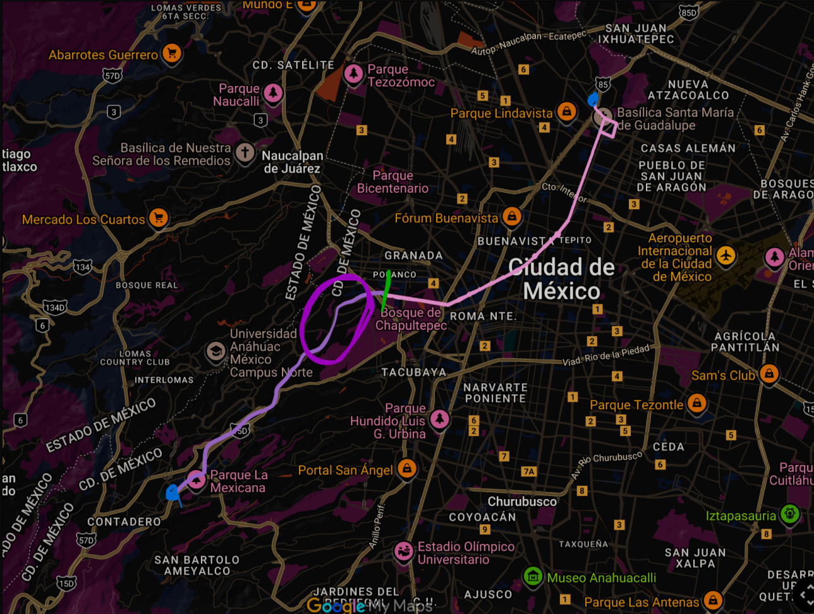

Conoce las rutas
La Línea 7 fue concebida originalmente para conectar Indios Verdes con Santa Fe, atravesando Paseo de la Reforma en toda su extensión. Este trazado habría sido un eje estratégico para unir el norte popular de la ciudad, una de las zonas con mayor demanda de transporte, con el poniente corporativo y residencial, donde se concentran miles de empleos pero cuya accesibilidad en transporte público sigue siendo limitada.
Sin embargo, la fuerte oposición vecinal respaldada en amparos judiciales y bajo el discurso de protección ambiental y patrimonial, sumada a las deficiencias del gobierno en materia de planeación, transparencia y gestión legal (pues inició obras sin contar con todas las autorizaciones del INAH), derivó en la suspensión parcial del proyecto. El trazo final quedó recortado: Indios Verdes – Campo Marte, sin llegar ni a la Fuente de Petróleos, mucho menos a Santa Fe.
